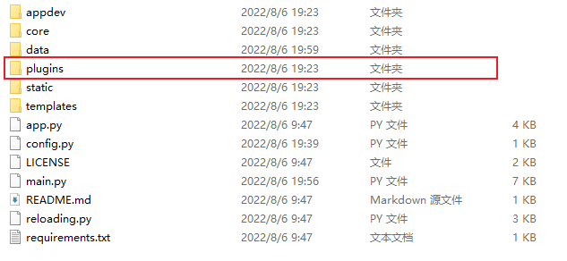
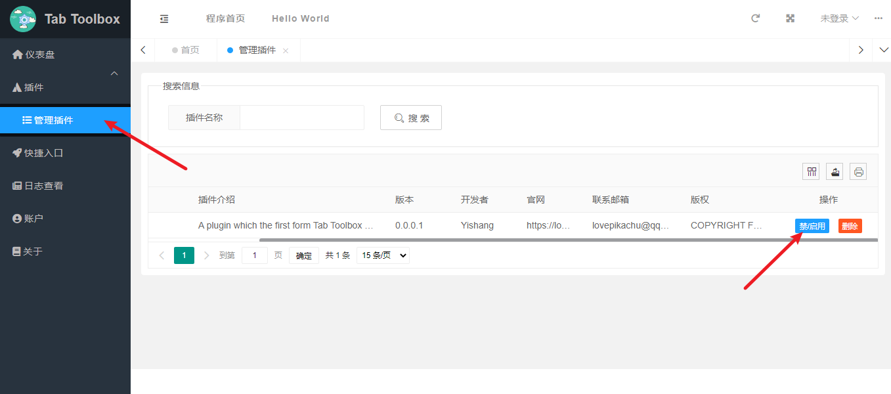

插件的安装与开发
特殊名词说明
插件(PLUGIN): 不仅仅指的是可以用的模块，Tab Toolbox for Website 中还指在 plugins 目录下的插件的文件夹名称。这样做允许是为了让不同的插件可以使用同一个名称。
插件名(PLUGIN_NAME)：插件的名称与插件不同的是插件名指的是插件的名称，而不是插件的文件夹名。
插件的安装与使用
(1) 您需要下载好您的插件，并放入 Tab Toolbox for Website 的 plugins 目录下。

(2) 接着您需要打开 Tab Toolbox for Website 的网页中的插件管理页面 进行启用插件。

开发：启用插件过程解释
(1) 当用户启用插件时，网页端会通过API接口向服务器发送命令。此API接口写在 core/api_core.py 下。网页端会提供对应的 插件 和 操作名称 。当服务器会通过操作名称和对应的插件进行禁启用操作。
(2) 若是启用，则会在 system 数据库文件中的 system_setting 表中的 enable_plugins 中添加插件。反之，则是删除对应插件的信息。
(3) 服务器将会调用 appdev 包中的 application 模块中的 reload() 函数进行重启。对于 reload() 函数您可以在 开发包与模块 章节中查看详细信息。
(4) 重启启动时，服务器会重载插件。
开发：插件的结构
目录结构
插件我们人为规定了一些特定的结构，
一个合理的插件必须包含两个文件：
DEVELOPEMENT PLUGIN
│ __init__.py # 插件主脚本
└─ plugin.json # 插件的说明文件
关于 plugin.json
plugin.json 中的内容不能丢失一下信息：
{
"PLUGIN_NAME": "插件名",
"PLUGIN_DESCRIPTION": "插件介绍",
"PLUGIN_VERSION": "插件版本",
"PLUGIN_DEVELOPER": "插件作者",
"PLUGIN_WEBSITE": "插件网址",
"PLUGIN_EMAIL": "插件邮箱",
"PLUGIN_COPYRIGHT": "插件版权"
}
您可以使用空文本替代值，但是不要丢失键。
关于 __init__.py
__init__.py 是插件被启用时默认调用的一个脚本。切记，此脚本中不允许存在死循环，否则将会堵塞工具箱的启动。
参考案例 Hello World 插件
下面是 Hello World 插件的示例：
目录结构：
DEVELOPEMENT PLUGIN
├─ templates
│ └─ hello world.html # 插件的主页面文件
│ __init__.py # 插件主脚本
└─ plugin.json # 插件的说明文件
注意：模板文件尽量使用 插件名称_模板名称 的方式命名，防止与其它插件的模板混淆。
__init__.py 内容：
import random
import appdev.ui as ui
from app import app
from flask import Blueprint, render_template
# 插件允许定义蓝图，不过蓝图的绑定需要自己来，见代码最后注册蓝图的地方
blueprint = Blueprint('helloWorld', __name__, template_folder='templates', static_folder="static",
url_prefix="/helloworld")
# 注册菜单
ui.menu_register("Hello World")
ui.menu_register("Hello World/实例", "fa-solid fa-code", "/helloworld")
# 注册快捷按钮
ui.set_quickstart_icon("helloworld", "你好世界", "fa-solid fa-earth-africa", "/helloworld", 0)
# 添加一则公告
ui.set_notice("helloworld", "来自 Hello World 插件的公告",
"<p>这个是一条来自 Hello World 测试公告，您可以在 Python 中 from appdev import ui</p>\n"
"<p>再使用 set_notice(symbol, title, content, [time_]) 来添加！</p>")
# 仪表盘添加卡片
ui.set_dashboard_div("helloworld1", """
<div class="layui-col-md6">
<div class="layui-card">
<div class="layui-card-header"><i class="fa-solid fa-flask-vial icon icon-blue"></i>helloworld插件测试</div>
<div class="layui-card-body">
这个是一条来自 Hello World 测试卡片，您可以在 Python 中 from appdev import ui <br>
然后使用 ui.set_dashboard_div(symbol, html) 来添加这一个卡片。
</div>
</div>
</div>""")
ui.set_dashboard_div("helloworld2", f"""
<div class="layui-col-md6">
<div class="layui-card">
<div class="layui-card-header"><i class="fa-solid fa-flask-vial icon icon-blue"></i>helloworld插件测试</div>
<div class="layui-card-body">
一个插件可以创建多个卡片，而且可以定义不同内容。比如生成随机数，你今天的幸运数字是：{random.randint(10000, 99999)}
<br><br><br>
</div>
</div>
</div>""")
@blueprint.route("/")
def helloworld():
return render_template("questions_index.html", )
# 等完全加载过一遍代码后，再调用app.py文件中的app注册蓝图函数注册蓝图
app.register_blueprint(blueprint)